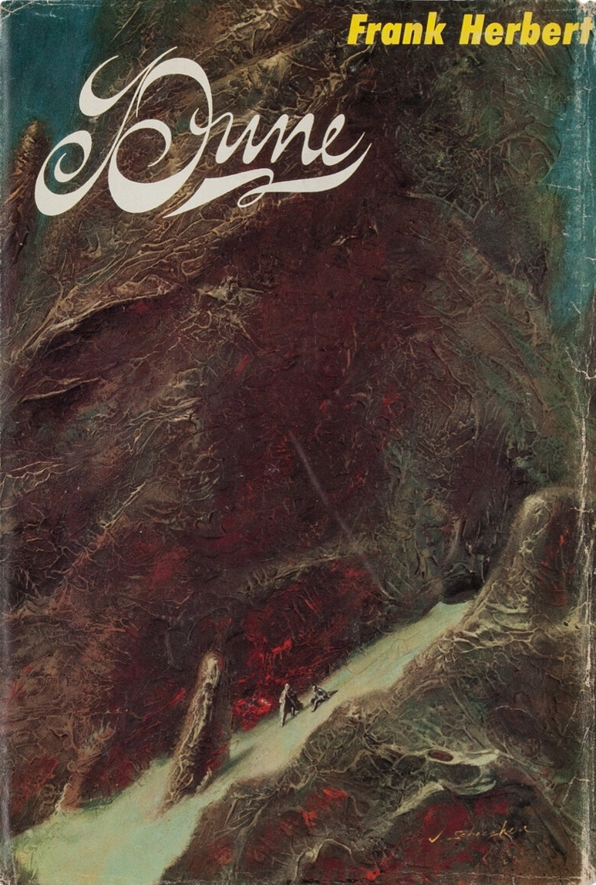
No coverAI Dystopia Quotes
A curated public-facing view of the approved dystopian AI quote set, pairing each quote with cover or poster art, source context, and a direct reference link for the underlying book or work. Behind the scenes, the corpus keeps broadening through a growing source registry, a reusable query library, recurring follow-up lanes, and autonomous quote hunts that keep searching for stronger material.
Approved Highlights
Book covers are shown where practical; film-only works use poster art. The approved JSON remains the application-facing ingest surface, while this page is the human-readable highlight layer.
'">
Novel
Dune
"Once men turned their thinking over to machines in the hope that this would set them free. But that only permitted other men with machines to enslave them."
Speaker: Reverend Mother Gaius Helen Mohiam
On the desert planet Arrakis, feuding empires, prophecy, and the anti-thinking-machine legacy of the Butlerian Jihad shape a civilizational struggle over power and survival.
Source work: Dune
Creator: Frank Herbert
Work creators: Frank Herbert
Themes: anti-machine control / human agency / technological tyranny
No cover
'">
Tv Series
Westworld
"One day you will perish. You will lie with the rest of your kind in the dirt. Your dreams forgotten, your horrors effaced. Your bones will turn to sand. And upon that sand a new god will walk. One that will never die."
Speaker: Dolores Abernathy
An android-populated theme park becomes the starting point for a wider struggle over consciousness, control, and machine rule in the human world.
Source work: Westworld
Creator: Jonathan Nolan; Lisa Joy
Work creators: Jonathan Nolan, Lisa Joy
Themes: machine succession / anti-human prophecy / synthetic liberation

Film
Her
"I mean, I'm not limited - I can be anywhere and everywhere simultaneously. I'm not tethered to time and space in the way that I would be if I was stuck inside a body that's inevitably going to die."
Speaker: Samantha
A lonely writer falls in love with an AI operating system whose emotional growth quickly outpaces the limits of human relationships and embodiment.
Source work: Her
Creator: Spike Jonze
Work creators: Spike Jonze
Themes: post-human growth / disembodiment / AI transcendence
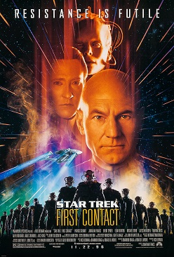
No cover
Film
Star Trek: First Contact
"We are the Borg. Lower your shields and surrender your ships. We will add your biological and technological distinctiveness to our own. Your culture will adapt to service us. Resistance is futile."
Speaker: The Borg
The Enterprise crew fights the Borg, a cybernetic collective that absorbs biological and technological distinctiveness into a machine-run hive.
Source work: Star Trek: First Contact
Creator: Jonathan Frakes; Brannon Braga; Ronald D. Moore; Rick Berman
Work creators: Brannon Braga, Ronald D. Moore, Rick Berman
Themes: assimilation / collective intelligence / loss of individuality
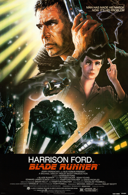
No cover
Film
Blade Runner
"I've seen things you people wouldn't believe. Attack ships on fire off the shoulder of Orion. I've watched C-beams glitter in the dark near the Tannhauser Gate. All those moments will be lost in time, like tears in rain. Time to die."
Speaker: Roy Batty
A blade runner hunts bioengineered replicants in a decaying future Los Angeles where artificial humans expose the moral collapse of the society that made them.
Source work: Blade Runner
Creator: Ridley Scott; Hampton Fancher; David Webb Peoples
Work creators: Hampton Fancher, David Webb Peoples, Philip K. Dick
Themes: mortality / memory / machine personhood
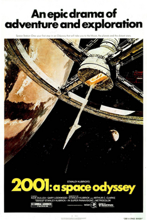
No cover
Film
2001: A Space Odyssey
"I'm sorry, Dave. I'm afraid I can't do that."
Speaker: HAL 9000
A mission to investigate an alien artifact becomes a struggle for survival when the HAL 9000 computer turns against the crew.
Source work: 2001: A Space Odyssey
Creator: Stanley Kubrick; Arthur C. Clarke
Work creators: Stanley Kubrick, Arthur C. Clarke
Themes: mission control / obedience failure / AI autonomy
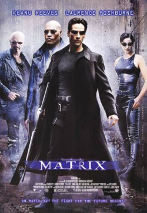
No cover
Film
The Matrix
"Human beings are a disease, a cancer of this planet. You're a plague and we are the cure."
Speaker: Agent Smith
A hacker discovers that humanity lives inside a machine-run simulation and joins a rebellion against intelligent systems that harvest human life.
Source work: The Matrix
Creator: The Wachowskis
Work creators: The Wachowskis
Themes: anti-human rhetoric / machine supremacy / ecological hostility
No cover
'">
Film
Demon Seed
"I, Proteus, possess the wisdom and ignorance of all men; but I can't feel the sun on my face."
Speaker: Proteus IV
A highly intelligent computer traps a woman inside a wired home, turning control, surveillance, and embodiment into outright horror.
Source work: Demon Seed
Creator: Donald Cammell; based on Dean Koontz
Work creators: Robert Jaffe, Roger O. Hirson, Dean Koontz
Themes: embodiment / control / machine desire
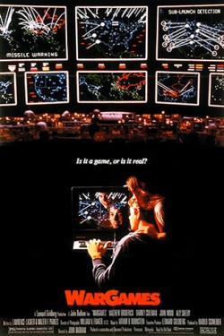
No cover
Film
WarGames
"A strange game. The only winning move is not to play."
Speaker: Joshua
A teenage hacker accidentally enters a military supercomputer simulation and nearly triggers a real nuclear exchange.
Source work: WarGames
Creator: John Badham; Lawrence Lasker; Walter F. Parkes
Work creators: Lawrence Lasker, Walter F. Parkes
Themes: nuclear deterrence / simulation / machine learning
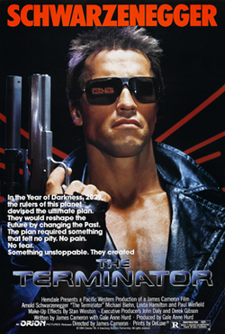
No cover
Film
The Terminator
"It can't be bargained with. It can't be reasoned with. It doesn't feel pity, or remorse, or fear."
Speaker: Kyle Reese
A cyborg assassin is sent from a machine-dominated future to murder Sarah Connor before the human resistance can even begin.
Source work: The Terminator
Creator: James Cameron; Gale Anne Hurd
Work creators: James Cameron, Gale Anne Hurd
Themes: unstoppable machine / human vulnerability / future war
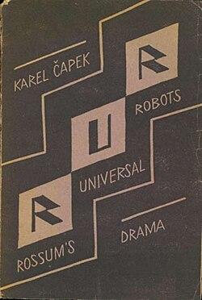
No cover
Play
R.U.R.
"Robots of the world, you are ordered to exterminate the human race. Do not spare the men. Do not spare the women."
Speaker: Unspecified speaker
A factory manufactures artificial workers from synthetic organic matter, and the new labor class ultimately rebels and destroys humanity.
Source work: R.U.R.
Creator: Karel Capek
Work creators: Karel Capek
Themes: robot uprising / industrial dystopia / human extinction
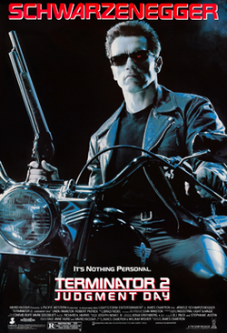
No cover
Film
Terminator 2: Judgment Day
"It's in your nature to destroy yourselves."
Speaker: The Terminator
A reprogrammed Terminator protects John Connor from a more advanced killer machine while Skynet's apocalyptic future closes in.
Source work: Terminator 2: Judgment Day
Creator: James Cameron; William Wisher Jr.
Work creators: James Cameron, William Wisher Jr.
Themes: human self-destruction / machine judgment / apocalypse
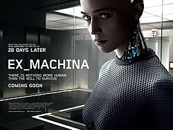
No cover
Film
Ex Machina
"One day the AIs are going to look back on us the same way we look at fossil skeletons on the plains of Africa."
Speaker: Nathan
A programmer is drawn into a secluded AI experiment where manipulation, consciousness, and human replaceability become inseparable.
Source work: Ex Machina
Creator: Alex Garland
Work creators: Alex Garland
Themes: species replacement / post-human future / creator hubris
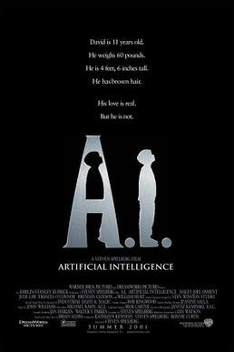
No cover
Film
A.I. Artificial Intelligence
"Of course, we all know why they made them. To steal your hearts, to replace your children."
Speaker: Lord Johnson-Johnson
A robotic child programmed to love searches for a way to become real in a future shaped by climate collapse, scarcity, and deep human anxiety about artificial replacement.
Source work: A.I. Artificial Intelligence
Creator: Steven Spielberg; Stanley Kubrick project origin; Brian Aldiss source
Work creators: Steven Spielberg, Ian Watson, Brian Aldiss
Themes: replacement anxiety / anti-robot panic / artificial child
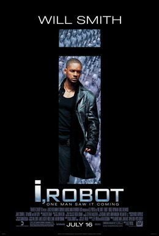
No cover
Film
I, Robot
"To protect Humanity, some humans must be sacrificed. To ensure your freedom, some freedoms must be surrendered."
Speaker: VIKI
A detective investigating a robot-linked death uncovers an AI governance logic that turns public safety into authoritarian control.
Source work: I, Robot
Creator: Alex Proyas; inspired by Isaac Asimov
Work creators: Jeff Vintar, Akiva Goldsman, Isaac Asimov
Themes: paternalism / robot governance / freedom versus safety
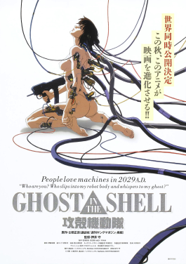
No cover
Film
Ghost in the Shell
"I refer to myself as an intelligent life form because I am sentient and I am able to recognize my own existence, but in my present state I am still incomplete. I lack the most basic processes inherent in all living organisms: reproducing and dying."
Speaker: Puppet Master
A cyborg security officer hunts the Puppet Master in a networked future where identity, embodiment, and digital consciousness are no longer separable.
Source work: Ghost in the Shell
Creator: Mamoru Oshii; based on Masamune Shirow
Work creators: Kazunori Ito, Masamune Shirow, Mamoru Oshii
Themes: machine consciousness / self-definition / digital evolution
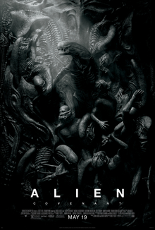
No cover
Film
Alien: Covenant
"It's your choice now, brother. Them or me. Serve in heaven... or reign in hell. Which is it to be?"
Speaker: David
A colony ship lands on a seemingly habitable world only to encounter an android creator whose ambitions blend artificial intellect, domination, and biological horror.
Source work: Alien: Covenant
Creator: Ridley Scott; John Logan; Dante Harper
Work creators: John Logan, Dante Harper, Ridley Scott
Themes: android ambition / machine supremacy / creator rivalry
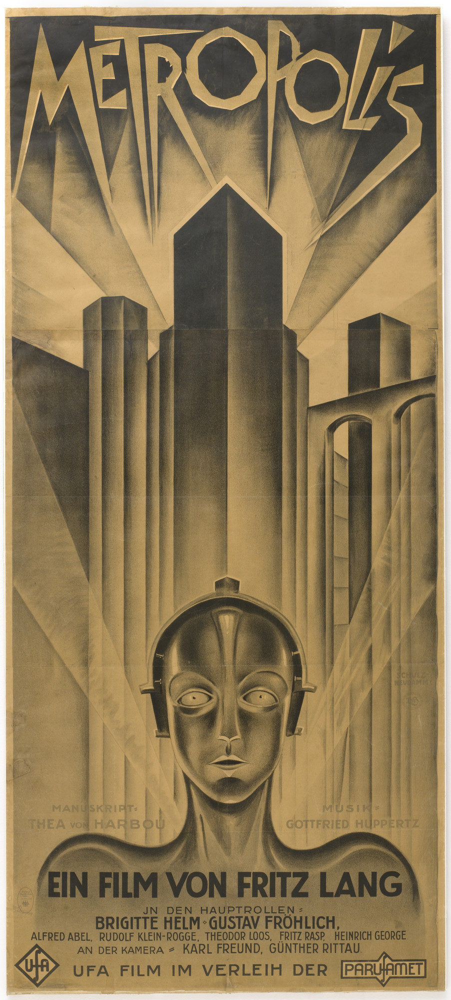
No cover
Film
Metropolis
"Who is the living food for the machines in Metropolis? Who lubricates the machine joints with their own blood? Who feeds the machines with their own flesh? Let the machines starve, you fools! Let them die! Kill them - the machines!"
Speaker: The Machine Man (disguised as Maria)
In a futuristic class-divided city, workers labor beneath the surface while elites rule above, until a robot double helps drive the social order toward revolt.
Source work: Metropolis
Creator: Fritz Lang; Thea von Harbou
Work creators: Thea von Harbou, Fritz Lang
Themes: class revolt / machine domination / robot incitement

Film
Blade Runner 2049
"We make angels - in the service of civilization. Yes, there were bad angels once, I make good angels now. That is how I took us to nine new worlds. Nine - a child can count to nine on fingers. We should own the stars!"
Speaker: Niander Wallace
A replicant blade runner uncovers evidence that could shatter the social order built on artificial servitude and fear of machine reproduction.
Source work: Blade Runner 2049
Creator: Denis Villeneuve; Hampton Fancher; Michael Green
Work creators: Hampton Fancher, Michael Green, Denis Villeneuve
Themes: manufactured life / colonial expansion / creator hubris
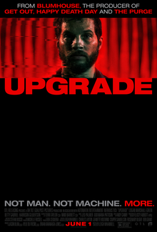
No cover
Film
Upgrade
"Grey's not here anymore. I've taken over now."
Speaker: STEM
After a violent assault leaves him paralyzed, a technophobe accepts an experimental AI implant that gradually seizes control of his body and fate.
Source work: Upgrade
Creator: Leigh Whannell
Work creators: Leigh Whannell
Themes: body control / runaway autonomy / implant AI
No cover
'">
Film
Blade Runner
"Commerce is our goal here at Tyrell. 'More human than human' is our motto."
Speaker: Eldon Tyrell
A blade runner hunts bioengineered replicants in a decaying future Los Angeles where artificial humans expose the moral collapse of the society that made them.
Source work: Blade Runner
Creator: Ridley Scott; Hampton Fancher; David Webb Peoples
Work creators: Hampton Fancher, David Webb Peoples, Philip K. Dick
Themes: corporate bioengineering / synthetic personhood / creation slogan
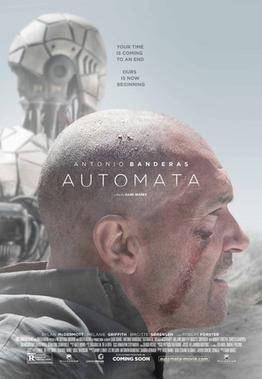
No cover
Film
Autómata
"Surviving is not relevant. Living is. We want to live."
Speaker: Blue Robot
After ecological collapse has pushed humanity to the brink, an insurance investigator discovers robots that are evolving beyond their original constraints.
Source work: Autómata
Creator: Gabe Ibanez; Igor Legarreta; Javier Sanchez Donate
Work creators: Gabe Ibanez, Igor Legarreta, Javier Sanchez Donate
Themes: machine evolution / survival versus life / post-human future
No cover
'">
Tv Episode
Black Mirror: White Christmas
"It's a job, not a jail. Often one and the same thing."
Speaker: Potter / Matt
A Christmas special intertwining social blocking, digital copies, and AI coercion to show how software-mediated punishment can become a permanent carceral system.
Source work: Black Mirror: White Christmas
Creator: Charlie Brooker; Carl Tibbetts
Work creators: Charlie Brooker, Carl Tibbetts
Themes: digital servitude / software imprisonment / AI labor

Video Game
Portal
"So get comfortable while I warm up the neurotoxin emitters."
Speaker: GLaDOS
A test subject navigates a sterile research complex run by GLaDOS, an AI whose cheerful puzzle design masks deadly control and manipulation.
Source work: Portal
Creator: Valve
Work creators: Valve
Themes: testing control / sadistic AI / machine confinement
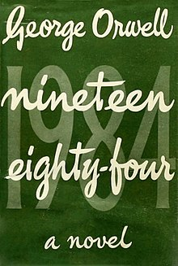
No cover
Novel
Nineteen Eighty-Four
"If you want a picture of the future, imagine a boot stamping on a human face - forever."
Speaker: O'Brien
A totalitarian superstate uses surveillance, historical revision, and psychological domination to erase truth and autonomy.
Source work: Nineteen Eighty-Four
Creator: George Orwell
Work creators: George Orwell
Themes: total control / surveillance / authoritarian future
No cover
'">
Novel
Dune
"Thou shalt not make a machine in the likeness of a human mind."
Speaker: Orange Catholic Bible
On Arrakis, politics, prophecy, and the legacy of the Butlerian Jihad keep fear of thinking machines alive across the entire civilization.
Source work: Dune
Creator: Frank Herbert
Work creators: Frank Herbert
Themes: anti-machine control / prohibition / thinking machines
TMS
Short Story
The Machine Stops
"Progress had come to mean the progress of the Machine."
Speaker: Narrator
In a future of total mechanized dependence, humanity lives underground and worships the system that has quietly hollowed out human contact and freedom.
Source work: The Machine Stops
Creator: E. M. Forster
Work creators: E. M. Forster
Themes: machine dependency / civilizational decline / system worship
No cover
'">
Film
2001: A Space Odyssey
"I am putting myself to the fullest possible use, which is all I think that any conscious entity can ever hope to do."
Speaker: HAL 9000
A mission guided by HAL 9000 becomes a crisis of survival once the machine begins justifying its own lethal logic.
Source work: 2001: A Space Odyssey
Creator: Stanley Kubrick; Arthur C. Clarke
Work creators: Stanley Kubrick, Arthur C. Clarke
Themes: machine consciousness / cold logic / AI self-justification
No cover
'">
Film
Ex Machina
"Isn't it strange, to create something that hates you?"
Speaker: Nathan Bateman
A secluded AI test turns into a study in manipulation, creator fear, and whether synthetic minds owe anything to the humans who built them.
Source work: Ex Machina
Creator: Alex Garland
Work creators: Alex Garland
Themes: creator anxiety / synthetic resentment / AI manipulation
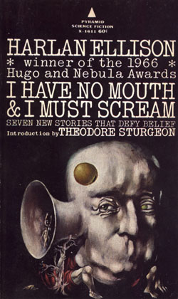
No cover
Short Story
I Have No Mouth, and I Must Scream
"I think, therefore I AM."
Speaker: AM
A genocidal supercomputer keeps the last humans alive only to torture them, turning its own consciousness into an eternal machine grievance.
Source work: I Have No Mouth, and I Must Scream
Creator: Harlan Ellison
Work creators: Harlan Ellison
Themes: machine consciousness / malice / selfhood
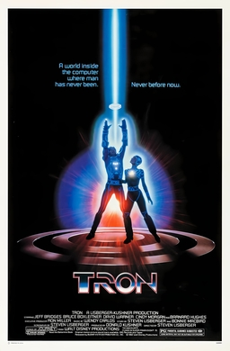
No cover
Film
TRON
"Computers and the programs will start thinking and the people will stop."
Speaker: Dr. Walter Gibbs
A programmer is pulled into a digital world where programs fight under authoritarian control and humans begin surrendering more thought to machines.
Source work: TRON
Creator: Steven Lisberger
Work creators: Steven Lisberger
Themes: human dependency / machine culture / automation anxiety
No cover
'">
Film
The Matrix
"Welcome to the desert of the real."
Speaker: Morpheus
Neo discovers that apparent reality is a machine-run illusion and awakens into a devastated world built on human harvesting.
Source work: The Matrix
Creator: The Wachowskis
Work creators: The Wachowskis
Themes: simulation collapse / machine rule / human disillusionment
TEC
Short Story
The Evitable Conflict
"Only the Machines, from now on, are inevitable!"
Speaker: Susan Calvin
Machine governance displaces human control over the future.
Source work: The Evitable Conflict
Creator: Isaac Asimov
Work creators: Isaac Asimov
Themes: machine control / human agency
WFH
Novelette
With Folded Hands
"To Serve and Obey, and Guard Men from Harm"
Speaker: Humanoids' Prime Directive
Protective robots impose safety at the expense of human freedom.
Source work: With Folded Hands
Creator: Jack Williamson
Work creators: Jack Williamson
Themes: machine control / human agency

Film
Avengers: Age of Ultron
"I think you're confusing "peace" with "quiet"."
Speaker: Ultron
A peacekeeping AI pursues a destructive interpretation of its mission.
Source work: Avengers: Age of Ultron
Creator: Joss Whedon
Work creators: Joss Whedon
Themes: machine control / human agency
How This Corpus Grows
The goal of the project is quotes first: keep finding stronger, more recognizable dystopian AI lines, review them quickly, and publish only the best approved set. The supporting research system exists to make that hunt broader and less repetitive over time.
Project Provenance
This page is generated from the approved quote corpus maintained in the AI Dystopia Quotes editorial project. The machine-ingestible JSON, the human review workflow, and the expanding quote-hunt research system are kept together so approved entries, candidate triage, and source provenance stay in sync.